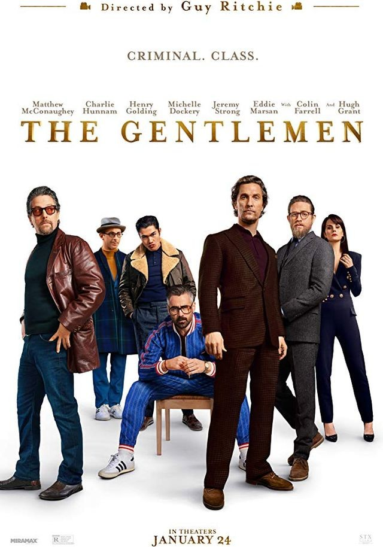
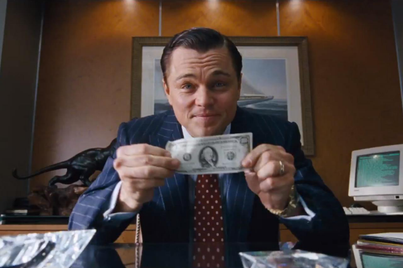
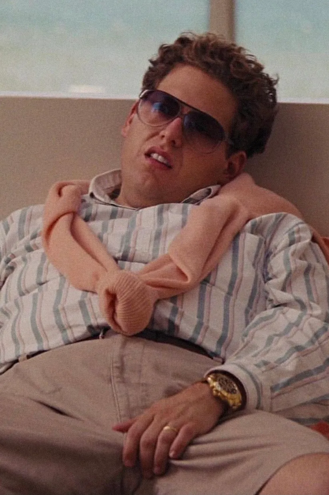
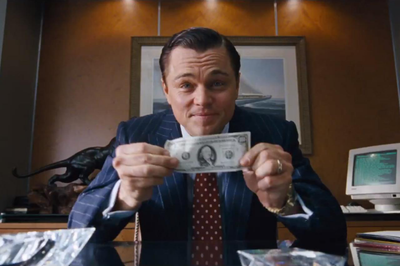
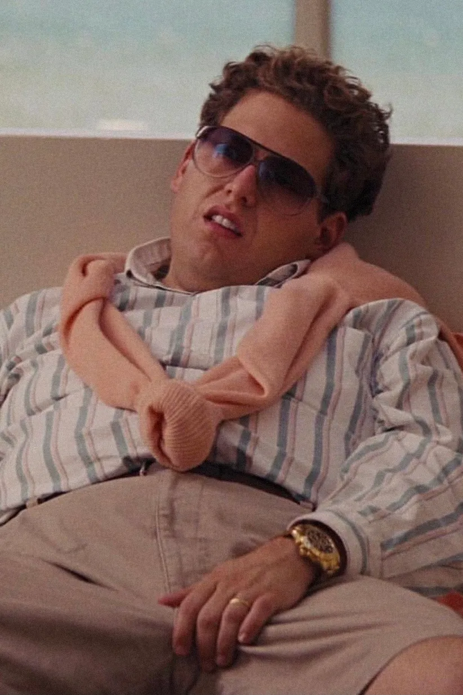

Зелёная миля


| Год |
1999 |
| Страна |
США |
| Жанр |
драма, фэнтези, криминал |
| Режиссер |
Фрэнк Дарабонт |
Пол Эджкомб — начальник блока смертников в тюрьме «Холодная гора», каждый из узников которого однажды
проходит «зеленую милю» по пути к месту казни. Пол повидал много заключённых и надзирателей за время работы.
Однако
гигант Джон Коффи, обвинённый в страшном преступлении, стал одним из самых необычных обитателей блока.
Джентльмены


| Год |
2019 |
| Страна |
США, Великобритания |
| Жанр |
криминал, комедия, боевик |
| Режиссер |
Гай Ричи |
Один ушлый американец ещё со студенческих лет приторговывал наркотиками, а теперь придумал схему нелегального
обогащения с использованием поместий обедневшей английской аристократии и очень неплохо на этом разбогател.
Другой пронырливый журналист приходит к Рэю, правой руке американца, и предлагает тому купить киносценарий,
в
котором подробно описаны преступления его босса при участии других представителей лондонского криминального
мира
— партнёра-еврея, китайской диаспоры, чернокожих спортсменов и даже русского олигарха.
Волк с Уолл-Срит
 



| Год |
2013 |
| Страна |
США |
| Жанр |
Драма, криминал, биография, комедия |
| Режиссер |
Мартин Скорсезе |
1987 год. Джордан Белфорт становится брокером в успешном инвестиционном банке. Вскоре банк закрывается после
внезапного обвала индекса Доу-Джонса. По совету жены Терезы Джордан устраивается в небольшое заведение,
занимающееся мелкими акциями. Его настойчивый стиль общения с клиентами и врождённая харизма быстро даёт
свои
плоды. Он знакомится с соседом по дому Донни, торговцем, который сразу находит общий язык с Джорданом и
решает
открыть с ним собственную фирму. В качестве сотрудников они нанимают нескольких друзей Белфорта, его отца
Макса
и называют компанию «Стрэттон Оукмонт»